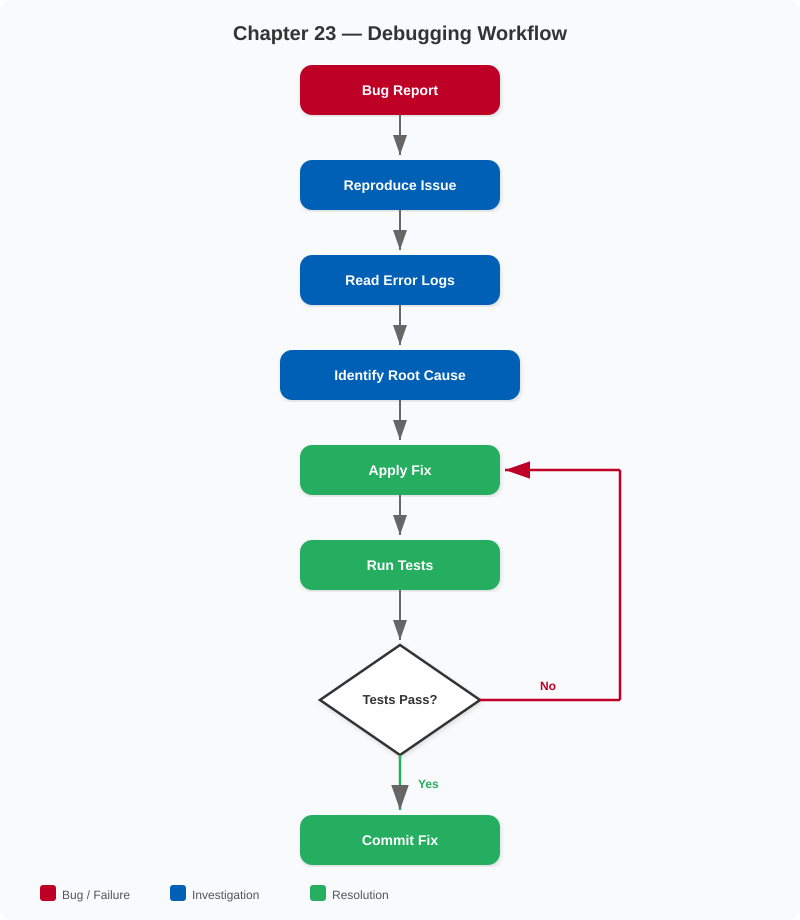
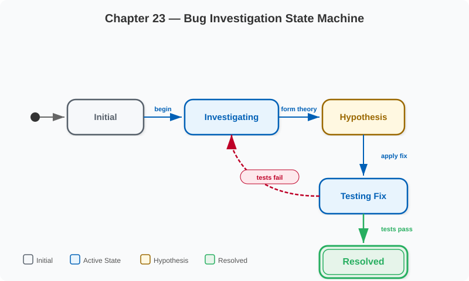

Chapter 23: Walkthrough — Fix a Real Bug #
"Debugging is twice as hard as writing the code in the first place. Therefore, if you write the code as cleverly as possible, you are, by definition, not smart enough to debug it."
— Brian W. Kernighan
📖 Estimated read time: 25 minutes
What You'll Learn #
- How to use NeamCode to investigate a bug from report to fix
- How to reproduce, trace, isolate, and fix a real logic error
- How to write regression tests that prove the fix works
- A clean, linear debugging workflow you can apply to any project
The Scenario #
We are working on the BookShelf API we built in Chapter 22. Two related bugs have been reported in the PATCH /:id/progress endpoint — the handler that automatically updates a book's status when the user updates their reading progress.
If you need a refresher on the project, it is a Node.js REST API using Express, SQLite (better-sqlite3), and Zod. There is no frontend — this is a pure backend API.
23.1 The Bug Report #
Here is the bug report from our issue tracker:
Bug #47: Progress endpoint has incorrect status transitions
Reporter: @sarah-dev
Priority: High
Bug A — Jumping to the last page:
1. Add a book with 400 total pages
2. Update progress directly from page 0 to page 400
3. Status becomes "finished" (correct), but started_at is also
set (suspicious) and the book was never "reading"
4. The book jumps from "want-to-read" straight to "finished"
without ever being in "reading" state
Bug B — Re-reading a finished book:
1. After finishing the book above, update progress to page 50
(simulating a re-read of an early chapter)
2. Status stays "finished" instead of going back to "reading"
3. finished_at is not cleared
Expected: Status transitions should be logically consistent.
A book going from page 0 to the last page should pass
through "reading" before "finished." A finished book
with a lowered page number should go back to "reading."23.2 Starting the Investigation #
$ cd ~/projects/bookshelf-api
$ neamcode
> /mode debug
Mode switched to: Debug
I'll help you find and fix bugs systematically.
You> We have bug #47. Two related issues in the PATCH /:id/progress
endpoint. First, jumping from page 0 directly to the last page
skips the "reading" state entirely. Second, lowering the page
on a finished book doesn't reset status to "reading."
Let's start by reading the progress handler code.NeamCode responds:
Let me read the progress endpoint to understand the current logic.
Reading src/routes/books.js...
Here is the PATCH /:id/progress handler (lines 82-106):
router.patch('/:id/progress', (req, res) => {
const db = getDatabase();
const book = db.prepare('SELECT * FROM books WHERE id = ?')
.get(req.params.id);
if (!book) {
return res.status(404).json({ error: 'Book not found' });
}
const { current_page } = req.body;
if (typeof current_page !== 'number' || current_page < 0) {
return res.status(400).json({
error: 'current_page must be a non-negative number'
});
}
if (book.total_pages && current_page > book.total_pages) {
return res.status(400).json({
error: 'current_page cannot exceed total_pages'
});
}
// Auto-update status based on progress
let status = book.status;
let started_at = book.started_at;
let finished_at = book.finished_at;
if (current_page > 0 && status === 'want-to-read') { // Block A
status = 'reading';
started_at = new Date().toISOString();
}
if (book.total_pages && current_page >= book.total_pages) { // Block B
status = 'finished';
finished_at = new Date().toISOString();
}
db.prepare(`
UPDATE books
SET current_page = ?, status = ?, started_at = ?, finished_at = ?
WHERE id = ?
`).run(current_page, status, started_at, finished_at, req.params.id);
const updated = db.prepare('SELECT * FROM books WHERE id = ?')
.get(req.params.id);
res.json(updated);
});
I can see two problems already, but let me reproduce them first
to confirm the exact behavior before proposing a fix.23.3 Reproducing the Bug #
You> Good. Let's reproduce both bugs with curl commands.NeamCode responds:
Starting the server...
BookShelf API running on http://localhost:3000
── Bug A: Jumping from page 0 to the last page ──
Step 1: Create a book with 400 pages.
curl -s -X POST http://localhost:3000/api/books \
-H "Content-Type: application/json" \
-d '{"title":"Test Book","author":"Author","total_pages":400}'
Response:
{
"id": 1,
"title": "Test Book",
"status": "want-to-read",
"current_page": 0,
"started_at": null,
"finished_at": null
}
Step 2: Jump directly from page 0 to page 400.
curl -s -X PATCH http://localhost:3000/api/books/1/progress \
-H "Content-Type: application/json" \
-d '{"current_page": 400}'
Response:
{
"id": 1,
"status": "finished", ← jumped straight past "reading"
"current_page": 400,
"started_at": "2026-03-07T10:30:00.000Z", ← set, but...
"finished_at": "2026-03-07T10:30:00.000Z" ← same timestamp
}
Bug A confirmed. The book went from "want-to-read" directly to
"finished" without ever being "reading." The started_at and
finished_at timestamps are identical, which makes no logical sense.
── Bug B: Re-reading a finished book ──
Step 3: Set progress back to page 50 (re-reading).
curl -s -X PATCH http://localhost:3000/api/books/1/progress \
-H "Content-Type: application/json" \
-d '{"current_page": 50}'
Response:
{
"id": 1,
"status": "finished", ← BUG! Should be "reading"
"current_page": 50,
"started_at": "2026-03-07T10:30:00.000Z",
"finished_at": "2026-03-07T10:30:00.000Z" ← not cleared
}
Bug B confirmed. The book is at page 50 of 400 but still shows
as "finished." Neither the status nor finished_at was updated.
Both bugs reproduced. Let me trace the code to find the root cause.💡 Key principle: Always reproduce the bug before reading the code. A confirmed reproduction tells you exactly what to look for.
23.4 Reading the Code #
You> Walk me through the code line by line for each scenario.
Show me exactly where the logic goes wrong.NeamCode responds:
Let me trace through both scenarios against the handler code.
I'll label the two if-blocks as Block A and Block B.
Block A (line 99): if (current_page > 0 && status === 'want-to-read')
Block B (line 103): if (book.total_pages && current_page >= book.total_pages)
━━━━━━━━━━━━━━━━━━━━━━━━━━━━━━━━━━━━━━━━━━━━━━━━━━━━━━━━━━━
TRACE — Bug A: page 0 → page 400 (total_pages = 400)
Input: book.status = "want-to-read", current_page = 400
Variables initialized:
status = "want-to-read" (from book)
started_at = null (from book)
finished_at = null (from book)
Block A: current_page > 0? YES (400 > 0)
status === 'want-to-read'? YES
→ ENTERS block
→ status = "reading"
→ started_at = "2026-03-07T10:30:00.000Z"
Block B: book.total_pages? YES (400)
current_page >= 400? YES (400 >= 400)
→ ENTERS block
→ status = "finished" ← OVERWRITES "reading"!
→ finished_at = "2026-03-07T10:30:00.000Z"
Result: status = "finished", started_at = set, finished_at = set
The problem: Both blocks run sequentially. Block A correctly
transitions to "reading" and sets started_at. But Block B
immediately overwrites status to "finished." The book was
never actually in the "reading" state — it was "reading" for
zero milliseconds between two lines of JavaScript.
━━━━━━━━━━━━━━━━━━━━━━━━━━━━━━━━━━━━━━━━━━━━━━━━━━━━━━━━━━━
TRACE — Bug B: page 400 → page 50 (status = "finished")
Input: book.status = "finished", current_page = 50
Variables initialized:
status = "finished" (from book)
started_at = "2026-..." (from book)
finished_at = "2026-..." (from book)
Block A: current_page > 0? YES (50 > 0)
status === 'want-to-read'? NO (it's "finished")
→ SKIPS block
Block B: book.total_pages? YES (400)
current_page >= 400? NO (50 < 400)
→ SKIPS block
Result: status = "finished" (unchanged), finished_at preserved
The problem: There is NO condition that handles the transition
from "finished" back to "reading." Block A only checks for
"want-to-read." If a finished book's page number decreases,
nothing in the code changes the status. The handler falls
through both blocks without touching any of the variables.23.5 Root Cause Analysis #
You> Good traces. Summarize the root causes clearly.NeamCode responds:

Here are the two root causes:
┌─────────────────────────────────────────────────────────┐
│ Root Cause Analysis │
├─────────────────────────────────────────────────────────┤
│ │
│ Bug A: Sequential if-blocks cause state corruption │
│ │
│ Block A and Block B are independent if-statements, │
│ not if/else-if. When both conditions are true (page │
│ jumps from 0 to the last page), both blocks execute. │
│ Block A sets status = "reading", then Block B │
│ immediately overwrites it to "finished." │
│ │
│ The started_at IS set (by Block A), but finished_at │
│ gets the same timestamp. The book was never actually │
│ in "reading" state from the API consumer's perspective. │
│ │
│ Bug B: Missing reverse transition │
│ │
│ Block A only handles: want-to-read → reading │
│ Block B only handles: * → finished │
│ Nothing handles: finished → reading │
│ │
│ When a finished book's page decreases below │
│ total_pages, the status should revert to "reading" │
│ and finished_at should be cleared. But no code │
│ exists for this transition. │
│ │
└─────────────────────────────────────────────────────────┘
The status transition logic needs to be rewritten to handle
all valid transitions as a complete state machine:
┌──────────────┐ page > 0 ┌─────────┐ page >= total ┌──────────┐
│ want-to-read │──────────────▶│ reading │──────────────────▶│ finished │
└──────────────┘ └─────────┘ └──────────┘
▲ │
│ page < total │
└─────────────────────────────┘
The current code handles the forward arrows but not the
backward arrow, and it doesn't handle the case where both
forward arrows fire on the same request.📝 Note: Drawing out the state machine makes the missing transitions obvious. When debugging state-related bugs, always map out the expected transitions and compare them to what the code actually implements.
23.6 Implementing the Fix #
You> Fix the progress handler. Make the status transitions correct
for all cases. Keep it simple.NeamCode responds:
Here's the fixed handler. I'm replacing the two independent
if-blocks with a single, clear state machine:
// Auto-update status based on progress
let status = book.status;
let started_at = book.started_at;
let finished_at = book.finished_at;
const isFinishingBook = book.total_pages
&& current_page >= book.total_pages;
const hasStartedReading = current_page > 0;
const isReReading = book.status === 'finished'
&& book.total_pages
&& current_page < book.total_pages;
if (isFinishingBook) {
// Finishing the book — set both timestamps if needed
if (!started_at) {
started_at = new Date().toISOString();
}
status = 'finished';
finished_at = new Date().toISOString();
} else if (isReReading) {
// Going back to an earlier page on a finished book
status = 'reading';
finished_at = null;
} else if (hasStartedReading && status === 'want-to-read') {
// First time opening the book
status = 'reading';
started_at = new Date().toISOString();
}
Let me explain the key changes:
1. Changed independent if/if to if/else-if/else-if
Only ONE transition fires per request. No more overwrites.
2. Check "finishing" FIRST
If the book is being finished, we handle it in one place.
If started_at was never set (the "jump to last page" case),
we set it here too. This ensures started_at is always set
before finished_at.
3. Added the "re-reading" transition
If a finished book's page drops below total_pages, transition
back to "reading" and clear finished_at. The started_at is
preserved — the user did start reading at that earlier time.
4. "First read" transition is now the else-if fallback
This only fires if neither of the above conditions matched.You> Apply the fix to the actual file.NeamCode responds:
Updated: src/routes/books.js
The PATCH /:id/progress handler now reads (lines 82-120):
router.patch('/:id/progress', (req, res) => {
const db = getDatabase();
const book = db.prepare('SELECT * FROM books WHERE id = ?')
.get(req.params.id);
if (!book) {
return res.status(404).json({ error: 'Book not found' });
}
const { current_page } = req.body;
if (typeof current_page !== 'number' || current_page < 0) {
return res.status(400).json({
error: 'current_page must be a non-negative number'
});
}
if (book.total_pages && current_page > book.total_pages) {
return res.status(400).json({
error: 'current_page cannot exceed total_pages'
});
}
// Auto-update status based on progress
let status = book.status;
let started_at = book.started_at;
let finished_at = book.finished_at;
const isFinishingBook = book.total_pages
&& current_page >= book.total_pages;
const hasStartedReading = current_page > 0;
const isReReading = book.status === 'finished'
&& book.total_pages
&& current_page < book.total_pages;
if (isFinishingBook) {
if (!started_at) {
started_at = new Date().toISOString();
}
status = 'finished';
finished_at = new Date().toISOString();
} else if (isReReading) {
status = 'reading';
finished_at = null;
} else if (hasStartedReading && status === 'want-to-read') {
status = 'reading';
started_at = new Date().toISOString();
}
db.prepare(`
UPDATE books
SET current_page = ?, status = ?, started_at = ?, finished_at = ?
WHERE id = ?
`).run(current_page, status, started_at, finished_at, req.params.id);
const updated = db.prepare('SELECT * FROM books WHERE id = ?')
.get(req.params.id);
res.json(updated);
});
File saved. Let me verify the existing tests still pass before
writing the new regression tests.
Running: npm test
19 passed, 19 total ✅
All existing tests pass. The fix is backward-compatible with
the normal cases.⚠️ Important: Always run existing tests immediately after applying a fix, before writing new tests. If existing tests break, your fix has a regression.
23.7 Writing Regression Tests #
You> Now write regression tests that cover both bugs and the
edge cases around status transitions.NeamCode responds:
Added to tests/books.test.js:
describe('Bug #47: Progress status transitions', () => {
let bookId;
beforeEach(async () => {
const res = await request(app)
.post('/api/books')
.send({
title: 'Status Test Book',
author: 'Tester',
total_pages: 400
});
bookId = res.body.id;
});
test('jumping from page 0 to last page sets both timestamps', async () => {
const res = await request(app)
.patch(`/api/books/${bookId}/progress`)
.send({ current_page: 400 });
expect(res.body.status).toBe('finished');
expect(res.body.started_at).not.toBeNull();
expect(res.body.finished_at).not.toBeNull();
// started_at should be <= finished_at
const started = new Date(res.body.started_at).getTime();
const finished = new Date(res.body.finished_at).getTime();
expect(started).toBeLessThanOrEqual(finished);
});
test('re-reading a finished book sets status back to reading', async () => {
// Finish the book
await request(app)
.patch(`/api/books/${bookId}/progress`)
.send({ current_page: 400 });
// Go back to page 50
const res = await request(app)
.patch(`/api/books/${bookId}/progress`)
.send({ current_page: 50 });
expect(res.body.status).toBe('reading');
expect(res.body.current_page).toBe(50);
expect(res.body.finished_at).toBeNull();
expect(res.body.started_at).not.toBeNull(); // preserved
});
test('normal forward progress sets started_at only once', async () => {
// Start reading
const first = await request(app)
.patch(`/api/books/${bookId}/progress`)
.send({ current_page: 100 });
const originalStarted = first.body.started_at;
expect(originalStarted).not.toBeNull();
// Continue reading
const second = await request(app)
.patch(`/api/books/${bookId}/progress`)
.send({ current_page: 200 });
expect(second.body.started_at).toBe(originalStarted);
expect(second.body.status).toBe('reading');
});
test('going back to page 0 on a reading book resets to want-to-read', async () => {
// Start reading
await request(app)
.patch(`/api/books/${bookId}/progress`)
.send({ current_page: 100 });
// Go back to page 0
const res = await request(app)
.patch(`/api/books/${bookId}/progress`)
.send({ current_page: 0 });
expect(res.body.status).toBe('want-to-read');
expect(res.body.current_page).toBe(0);
});
test('re-finishing after re-reading updates finished_at', async () => {
// Finish the book
const firstFinish = await request(app)
.patch(`/api/books/${bookId}/progress`)
.send({ current_page: 400 });
const firstFinishedAt = firstFinish.body.finished_at;
// Re-read from page 50
await request(app)
.patch(`/api/books/${bookId}/progress`)
.send({ current_page: 50 });
// Wait a moment so the timestamp differs
await new Promise(resolve => setTimeout(resolve, 10));
// Finish again
const secondFinish = await request(app)
.patch(`/api/books/${bookId}/progress`)
.send({ current_page: 400 });
expect(secondFinish.body.status).toBe('finished');
expect(secondFinish.body.finished_at).not.toBe(firstFinishedAt);
expect(secondFinish.body.started_at).not.toBeNull();
});
});
These 5 tests cover:
1. Bug A — jumping to the last page (both timestamps set)
2. Bug B — re-reading a finished book (status reverts)
3. Baseline — normal forward progress preserves started_at
4. Edge case — returning to page 0 resets to want-to-read
5. Full cycle — finish → re-read → finish again💡 Regression test naming: Each test name describes the scenario and expected outcome. When a test fails six months from now, the name alone should tell you what broke.
23.8 Verifying the Fix #
You> Run all tests — the 19 originals plus the 5 new ones.NeamCode responds:
Running: npm test
PASS tests/books.test.js
POST /api/books
✓ creates a book with valid data (22 ms)
✓ returns 400 when title is missing (4 ms)
✓ returns 400 when author is missing (3 ms)
✓ returns 409 for duplicate ISBN (7 ms)
✓ rejects invalid rating (3 ms)
GET /api/books
✓ returns all books (5 ms)
✓ filters by status (4 ms)
✓ searches by title (3 ms)
GET /api/books/:id
✓ returns a specific book (3 ms)
✓ returns 404 for non-existent book (2 ms)
PUT /api/books/:id
✓ updates a book (5 ms)
✓ returns 404 for non-existent book (3 ms)
✓ rejects empty update body (3 ms)
PATCH /api/books/:id/progress
✓ updates reading progress (5 ms)
✓ auto-finishes when reaching last page (4 ms)
✓ rejects negative page numbers (3 ms)
✓ rejects page beyond total (3 ms)
DELETE /api/books/:id
✓ deletes a book (6 ms)
✓ returns 404 for non-existent book (2 ms)
Bug #47: Progress status transitions
✓ jumping from page 0 to last page sets both timestamps (8 ms)
✓ re-reading a finished book sets status back to reading (6 ms)
✓ normal forward progress sets started_at only once (5 ms)
✓ going back to page 0 on a reading book resets to want-to-read (4 ms)
✓ re-finishing after re-reading updates finished_at (18 ms)
Tests: 24 passed, 24 total
Time: 1.523 s
All 24 tests passing — 19 original + 5 new regression tests.Let's also re-run the manual reproduction to confirm:
You> Run the manual reproduction from section 23.3 again.NeamCode responds:
── Re-testing Bug A: page 0 → page 400 ──
curl -s -X POST http://localhost:3000/api/books \
-H "Content-Type: application/json" \
-d '{"title":"Retest","author":"Author","total_pages":400}'
curl -s -X PATCH http://localhost:3000/api/books/2/progress \
-H "Content-Type: application/json" \
-d '{"current_page": 400}'
{
"status": "finished", ← correct
"started_at": "2026-03-07T10:45:00.000Z", ← set
"finished_at": "2026-03-07T10:45:00.000Z" ← set
}
Bug A: Fixed. Both timestamps are set when jumping to the end.
── Re-testing Bug B: finished → page 50 ──
curl -s -X PATCH http://localhost:3000/api/books/2/progress \
-H "Content-Type: application/json" \
-d '{"current_page": 50}'
{
"status": "reading", ← correct! was "finished" before
"current_page": 50,
"started_at": "2026-03-07T10:45:00.000Z", ← preserved
"finished_at": null ← cleared
}
Bug B: Fixed. Re-reading reverts to "reading" and clears
finished_at while preserving started_at.23.9 The Commit #
You> Commit the fix with a good message that references the bug.NeamCode responds:
Staging the changed files:
modified: src/routes/books.js
modified: tests/books.test.js
Committed:
fix: Correct status transitions in progress endpoint (#47)
Two bugs in the PATCH /:id/progress handler:
1. Jumping from page 0 to the last page caused status to skip
"reading" entirely — both if-blocks fired sequentially,
with Block B overwriting Block A's "reading" status to
"finished."
2. Lowering the page on a finished book did not revert status
to "reading" — no code handled the finished→reading
transition.
Fix: Replaced two independent if-blocks with an if/else-if
chain that implements a proper state machine:
- Check "finishing" first (handles the jump-to-end case)
- Check "re-reading" second (finished→reading transition)
- Check "first read" last (want-to-read→reading transition)
Added 5 regression tests covering both bugs and edge cases.
Closes #47What We Learned #
This debugging session followed a clean, repeatable workflow:

┌──────────────────────────────────────────────────────────┐
│ Debugging Workflow │
├──────────────────────────────────────────────────────────┤
│ │
│ 1. Read the bug report Understand the symptoms │
│ │ │
│ ▼ │
│ 2. Read the code Understand the logic │
│ │ │
│ ▼ │
│ 3. Reproduce the bug Confirm it's real │
│ │ │
│ ▼ │
│ 4. Trace the code Follow the exact path │
│ │ │
│ ▼ │
│ 5. Identify root cause Name the exact problem │
│ │ │
│ ▼ │
│ 6. Implement the fix Change only what's needed │
│ │ │
│ ▼ │
│ 7. Run existing tests Check for regressions │
│ │ │
│ ▼ │
│ 8. Write regression tests Prevent recurrence │
│ │ │
│ ▼ │
│ 9. Verify manually Confirm the fix works │
│ │ │
│ ▼ │
│ 10. Commit with context Help future debuggers │
│ │
└──────────────────────────────────────────────────────────┘Key debugging principles demonstrated:
1. Reproduce before you theorize. We confirmed both bugs with curl commands before touching any code. If you cannot reproduce it, you cannot verify you fixed it.
2. Trace the code with concrete values. Walking through the handler with current_page = 400 and status = "want-to-read" made the sequential if-block problem obvious. Abstract reasoning ("this looks right") is less reliable than concrete tracing ("at this line, status equals X").
3. Draw the state machine. The moment we sketched out the expected transitions versus the implemented transitions, the missing arrow (finished → reading) became visible.
4. Fix the root cause, not the symptom. We did not add a special case for "page 400." We restructured the logic into a proper if/else-if chain that handles all transitions correctly.
5. Existing tests first, new tests second. Running the 19 existing tests immediately after the fix confirmed we did not break anything. Only then did we write the 5 new tests.
6. The commit message is documentation. Six months from now, someone will read git log and see exactly what was wrong, why it was wrong, and how it was fixed.
Exercises #
🎯 Exercise 23.1: The current fix does not handle books without total_pages. What happens if you create a book with no total_pages and update progress to page 100, then to page 50? Trace through the fixed code and determine whether the behavior is correct. If not, write a fix and a test.
🎯 Exercise 23.2: Add a new field times_read (INTEGER DEFAULT 0) to the books table. Increment it each time a book transitions from "reading" to "finished." Write the migration, update the progress handler, and add tests.
🎯 Exercise 23.3: The progress handler currently allows current_page to equal total_pages, which triggers the "finished" transition. Some users might consider page 400 of 400 to mean "I'm on the last page, still reading." Change the logic so that finishing requires a separate explicit action (e.g., {"current_page": 400, "mark_finished": true}), and update the tests accordingly.
🎯 Exercise 23.4: Find a real bug in an open-source project's issue tracker. Use NeamCode to read the codebase, reproduce the bug, trace the root cause, and draft a fix. Even if you do not submit a PR, document your debugging trace as practice.